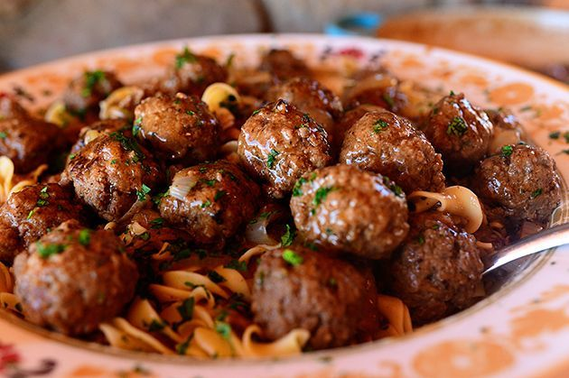

Meatballs

Description:
Ingredients
- 1000g ground pork
- 500g pasta (Spaghetti)
- 800g tomato sauce
- 3 medium onions
- 3 carrots
- salt, pepper, paprika, oregano, basil, orange peel, honey
- 3-4 cloves of garlic
- mix the meat with pepper, salt and paprika and form it into ~3 cm balls
- fry the meatballs in a pan until the have a nice brovn crust
- when done, put them on a plate
- put 5l of salted water on the stove
- dice the onions, grate the carrots and put them in the pan with the fat from the meatballs
- add a bit (around 2dl) of water to the pan and put the lid on it
- when the onion is soft and the carrot is sweet out the garlic in the pan(minced or diced)
- when the pasta water is boiling put in the pasta and boil until al dante
- pour in the tomato sauce the orange peels and the spices and let it simmer for a few minutes
- put the meatballs into the pan
- cut the heat and take out the orange peels
- put on plate, grate cheese on top and serve